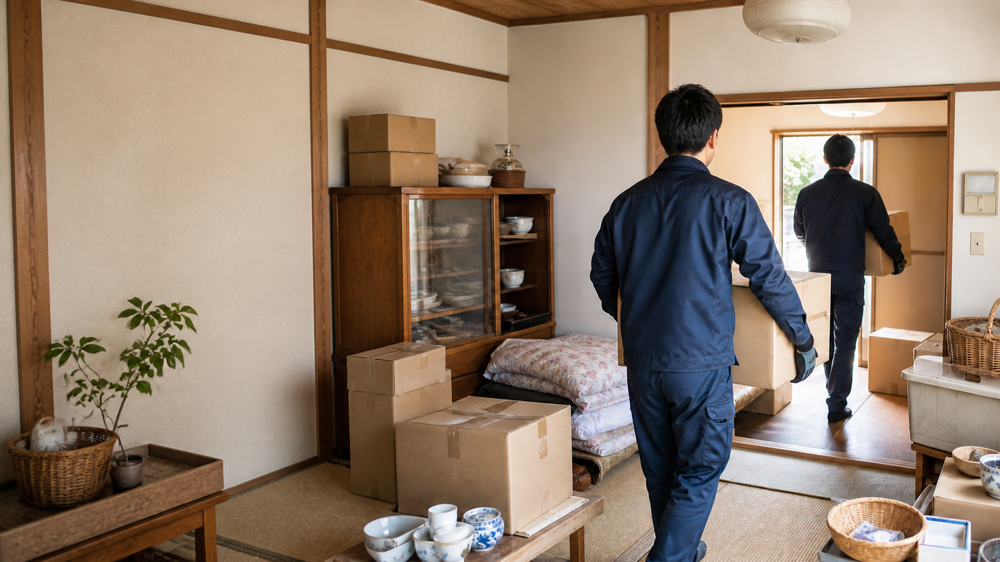
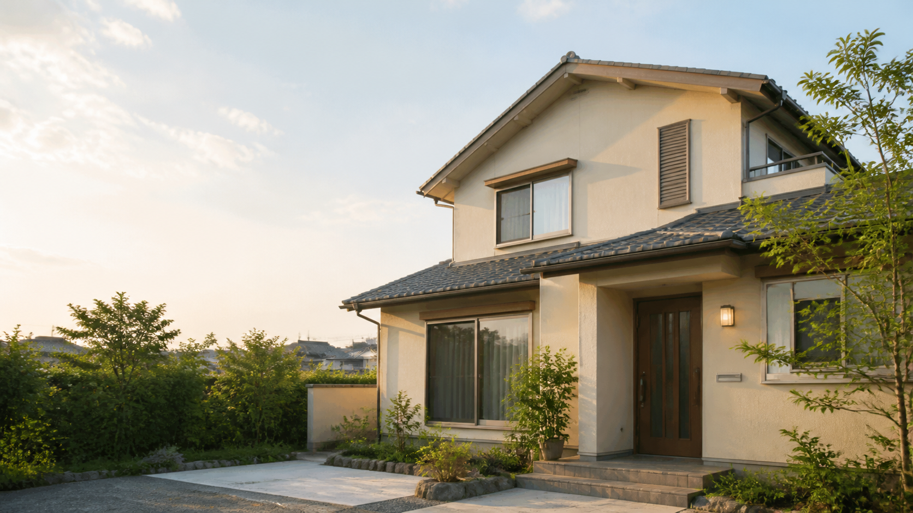
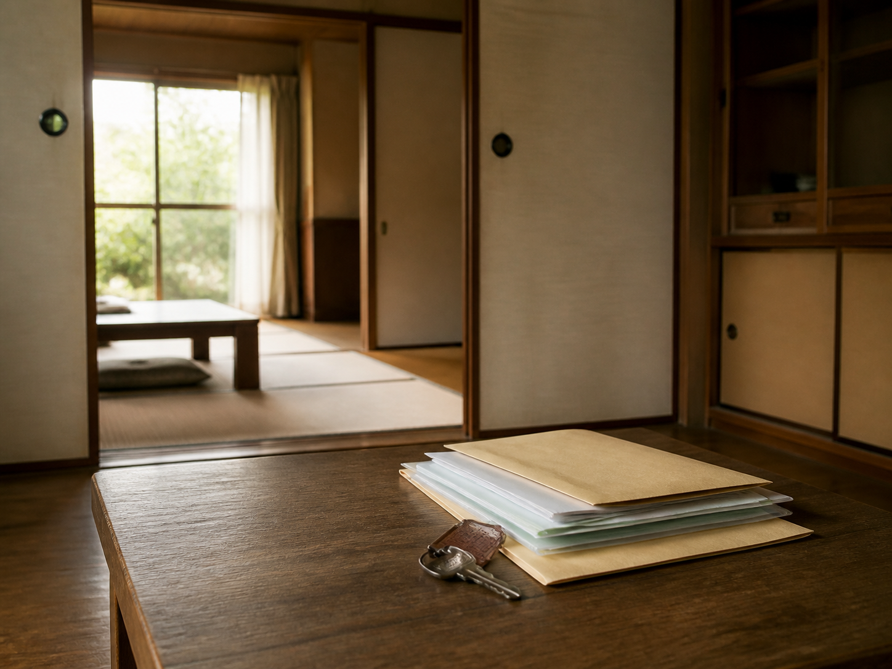
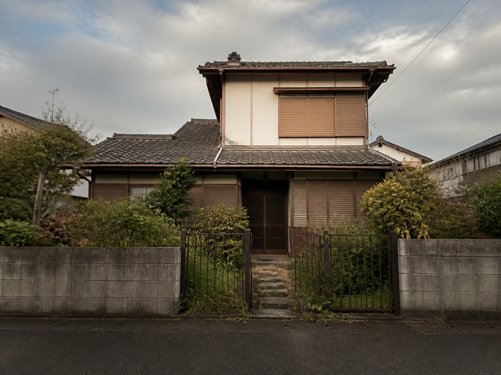
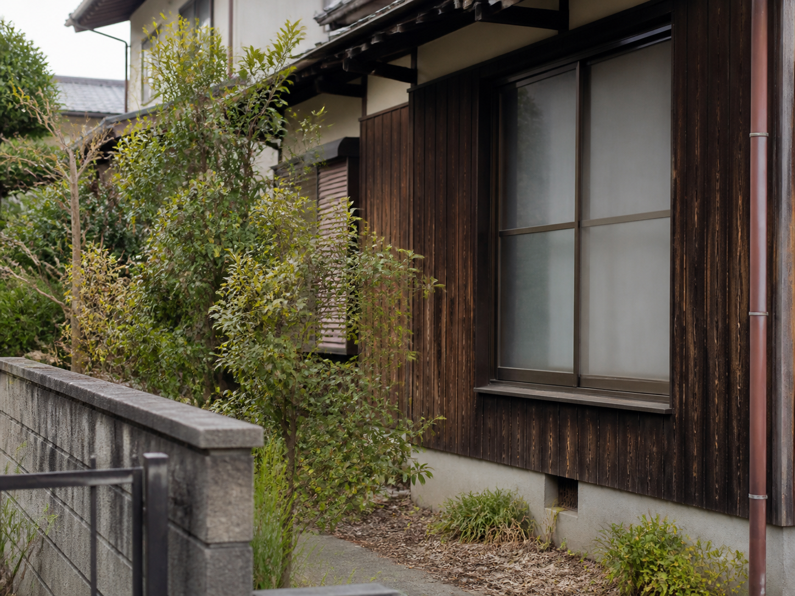
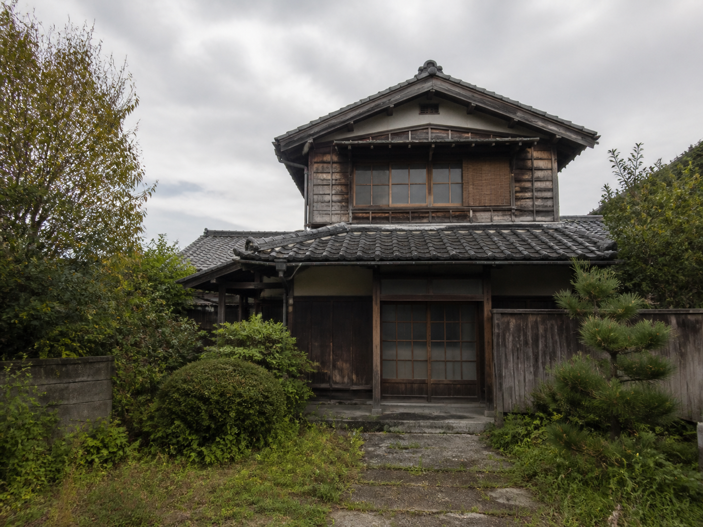
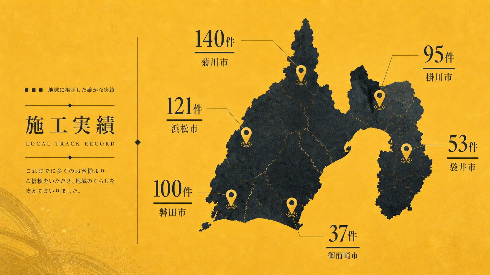
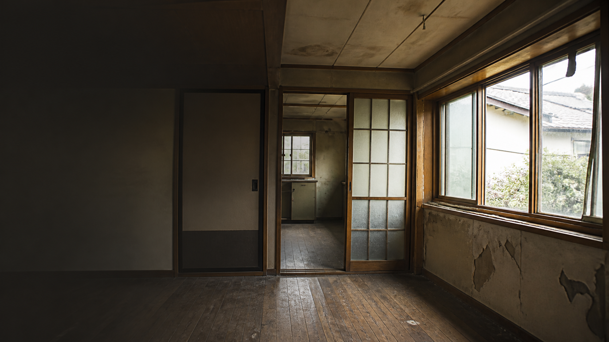
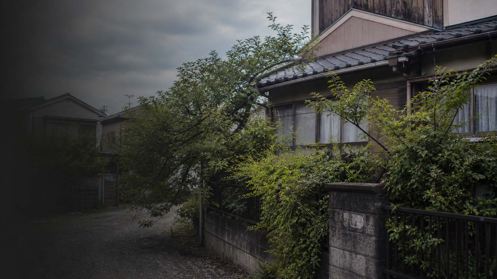
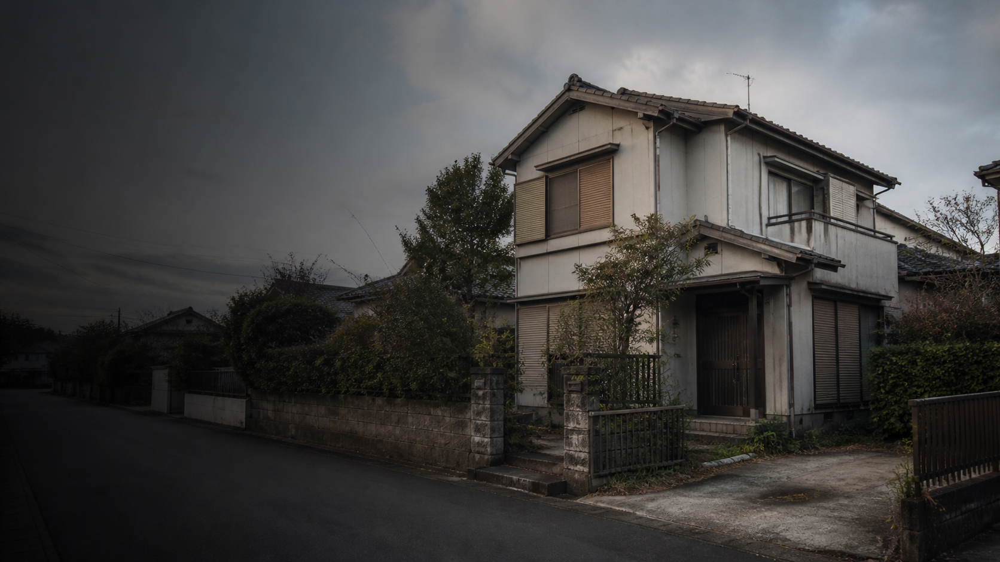

菊川市加茂｜家財整理から再生へ


静岡県西部・中部｜空き家再生・不動産買取片付け前の空き家も、
片付け前の空き家も、
まるごとお任せください。
家財整理・残置物の片付けから、買取・再生まで。
空き家の状況に合わせて、イル不動産が一貫して対応します。
空き家のこれからを考える、
地域に根ざしたパートナーです。空き家のこれからを
考える、地域に根ざした
パートナーです。
地域に根ざしたパートナーです。空き家のこれからを
考える、地域に根ざした
パートナーです。
2025年 年間査定依頼
929件
静岡県内の拠点数
3拠点
現地訪問
3営業日以内
REVIVAL STORIES
再生事例
横にスワイプできます
荷物が残った空き家を、
浜松市｜建物の良さを活かす
傷みが進んだ住まいにも、
再生という選択肢を。
浜松市三ヶ日町｜遠方相続のご相談
遠方のご実家も、
現地確認から一貫して対応。
磐田市中泉｜次の暮らしへ
建物の状態を見極め、
暮らしをつなぐ住まいへ。
袋井市久能｜再生の選択肢
片付けから始める、
空き家再生のご提案。
FOR OWNERS OF VACANT HOMES
その空き家のこと、
ひとりで抱えていませんか。
空き家の事情は、一軒ごとに違います。
まずは「自分の場合も相談できる」と感じていただけるよう、代表的なお悩みをご紹介します。

01INHERITED HOME相続した実家を、
相続した実家を、
どうすればいいか分からない
手続きや管理、家財の整理など、何から始めるべきか迷ってしまう。

02DISTANT HOME遠方に住んでいて、
遠方に住んでいて、
管理が行き届かない
なかなか帰れず、空き家の状態が気になっている。
BELONGINGS REMAIN荷物が多く、
荷物が多く、
片付けに踏み出せない
家財が残り、売却を諦めかけている。

04NEIGHBOR CONCERN近隣に迷惑を
近隣に迷惑を
かけていないか心配
庭木や建物の傷みが気になっている。

05DEMOLISH OR REVIVE壊すべきか、
壊すべきか、
活かせるのか迷っている
建物の状態を見て、次の選択肢を考えたい。
REVIVAL STORY
壊す前に、
できることを
考える。
私たちは、物件の価値だけでなく、
そこにあった暮らしの記憶も大切にしています。
再生を通して、住まいを地域へ返していきます。
BEFORE
AFTER
菊川市加茂｜空き家再生事例
片付けから始め、次の暮らしを迎える住まいへ。
家財整理を含めて引き受け、建物の良さを活かしながら再生。単に買い取るのではなく、次の住まい手につながる姿を見据えて整えました。
WHY ILL REAL ESTATE
空き家の「困った」に、
誠実に向き合うために。
01
営業日3日以内に
現地へ伺います。
ご相談から営業日3日以内を目安に、現地確認の日程をご提案。お急ぎの事情にも、できる限り迅速に対応します。
02
家財整理から
引き取りまで一貫対応。
残置物や片付けが障壁になっている場合もご安心ください。窓口を増やさず、売却までをスムーズにつなげます。
03
事情に合わせた、
柔軟なご提案。
契約後も一定期間住み続けたいなど、それぞれのご事情を伺いながら、無理のない条件を一緒に考えます。

WHY ACT NOW
空き家を放置すると、
起こりうること。

01建物の傷みが進む通風や換気がされないことで、カビ・腐食・雨漏りなどが進行することがあります。

02近隣への影響が生じる庭木の越境や害虫、不法侵入など、周囲に心配をかけてしまう場合があります。

03資産価値を保ちにくくなる時間の経過とともに再生の選択肢が狭まり、維持管理の負担も大きくなります。
FLOW
ご相談から、お引き渡しまで。
ご相談
お電話またはフォームから、お気軽にご連絡ください。
現地確認
営業日3日以内を目安に、現地へ伺い状況を確認します。
ご提案・ご契約
事情に合わせた条件をご提示し、納得いただいてから進めます。
お引き渡し
家財整理なども含め、次の一歩を丁寧にサポートします。
FAQ
よくあるご質問
初めてのご相談でも、わかりやすくお答えします。
- Q.家の中に荷物が残ったままでも相談できますか？
- Q.遠方に住んでいるため、現地に立ち会えません。
- Q.築年数が古く、傷みが進んでいます。
- Q.査定後に、必ず売却しなければなりませんか？
CONTACT